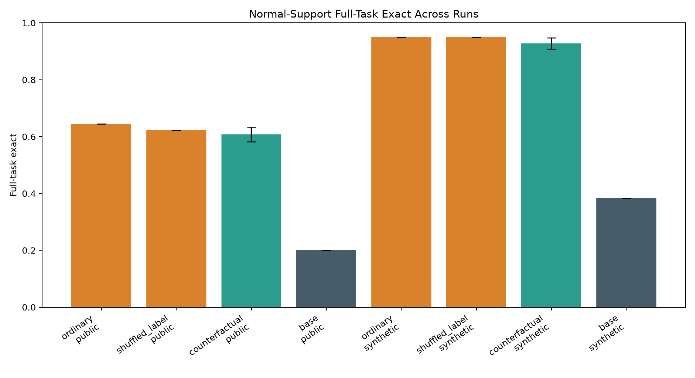
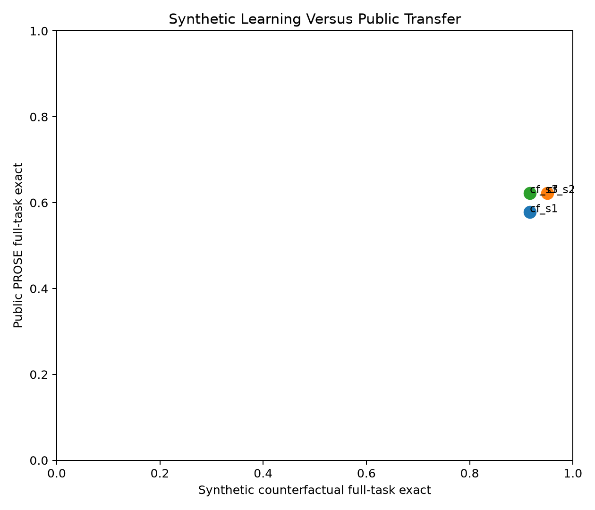
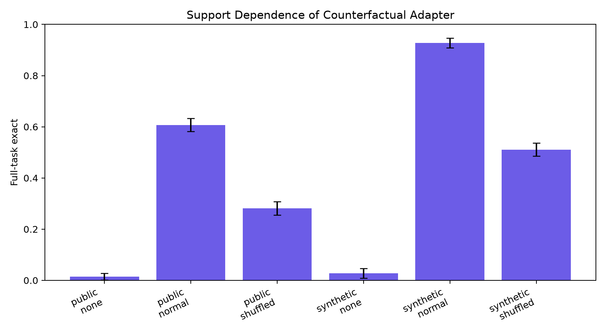
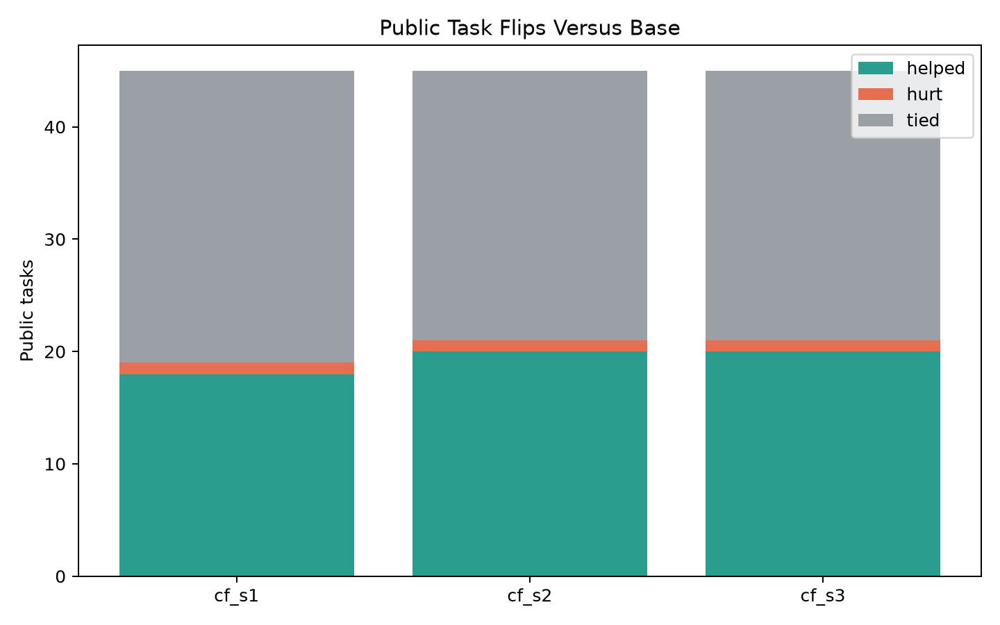
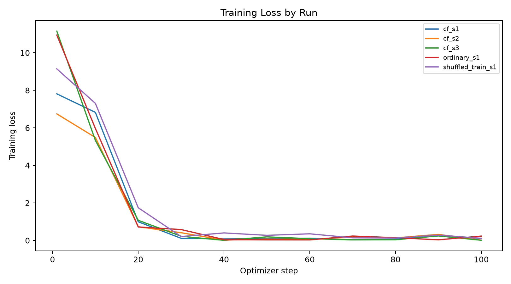

Can LoRA posttraining on counterfactual few-shot episodes make Qwen3-4B rely more on the support examples of a text-transformation task, and does that transfer to a public benchmark rather than only to the synthetic generator?
The training signal is answer-only. No public benchmark labels are used for training. The controls test whether the effect survives support shuffling, no-support prompts, ordinary synthetic training, and deliberately shuffled training support labels.
20.0%; counterfactual adapter mean 60.7% with seed spread 2.6%; delta 40.7%.38.3%; counterfactual adapter mean 92.8%.60.7%, shuffled 28.1%, no support 1.5%.64.4%.62.2%.| arm | split | support_mode | runs | tasks | rows | row_exact_mean | row_exact_std | full_task_exact_mean | full_task_exact_std |
|---|---|---|---|---|---|---|---|---|---|
| base | public_prose | normal | 1 | 45 | 135 | 37.0% | 0.0% | 20.0% | 0.0% |
| base | public_prose | shuffled | 1 | 45 | 135 | 11.1% | 0.0% | 2.2% | 0.0% |
| counterfactual_adapter | public_prose | none | 3 | 45 | 135 | 3.7% | 0.7% | 1.5% | 1.3% |
| counterfactual_adapter | public_prose | normal | 3 | 45 | 135 | 70.6% | 1.5% | 60.7% | 2.6% |
| counterfactual_adapter | public_prose | shuffled | 3 | 45 | 135 | 45.4% | 3.7% | 28.1% | 2.6% |
| ordinary_adapter | public_prose | none | 1 | 45 | 135 | 5.2% | 0.0% | 0.0% | 0.0% |
| ordinary_adapter | public_prose | normal | 1 | 45 | 135 | 74.1% | 0.0% | 64.4% | 0.0% |
| ordinary_adapter | public_prose | shuffled | 1 | 45 | 135 | 48.9% | 0.0% | 26.7% | 0.0% |
| shuffled_label_adapter | public_prose | none | 1 | 45 | 135 | 4.4% | 0.0% | 2.2% | 0.0% |
| shuffled_label_adapter | public_prose | normal | 1 | 45 | 135 | 74.1% | 0.0% | 62.2% | 0.0% |
| shuffled_label_adapter | public_prose | shuffled | 1 | 45 | 135 | 64.4% | 0.0% | 51.1% | 0.0% |
| base | synthetic_counterfactual | normal | 1 | 60 | 120 | 53.3% | 0.0% | 38.3% | 0.0% |
| base | synthetic_counterfactual | shuffled | 1 | 60 | 120 | 20.8% | 0.0% | 16.7% | 0.0% |
| counterfactual_adapter | synthetic_counterfactual | none | 3 | 60 | 120 | 5.3% | 3.4% | 2.8% | 1.9% |
| counterfactual_adapter | synthetic_counterfactual | normal | 3 | 60 | 120 | 96.1% | 0.5% | 92.8% | 1.9% |
| counterfactual_adapter | synthetic_counterfactual | shuffled | 3 | 60 | 120 | 60.3% | 2.9% | 51.1% | 2.5% |
| ordinary_adapter | synthetic_counterfactual | none | 1 | 60 | 120 | 2.5% | 0.0% | 0.0% | 0.0% |
| ordinary_adapter | synthetic_counterfactual | normal | 1 | 60 | 120 | 96.7% | 0.0% | 95.0% | 0.0% |
| ordinary_adapter | synthetic_counterfactual | shuffled | 1 | 60 | 120 | 58.3% | 0.0% | 46.7% | 0.0% |
| shuffled_label_adapter | synthetic_counterfactual | none | 1 | 60 | 120 | 0.8% | 0.0% | 0.0% | 0.0% |
| shuffled_label_adapter | synthetic_counterfactual | normal | 1 | 60 | 120 | 97.5% | 0.0% | 95.0% | 0.0% |
| shuffled_label_adapter | synthetic_counterfactual | shuffled | 1 | 60 | 120 | 95.8% | 0.0% | 91.7% | 0.0% |
| run_name | seed | arm | split | tasks | rows | row_exact | full_task_exact |
|---|---|---|---|---|---|---|---|
| cf_s1 | 20260628 | base | public_prose | 45 | 135 | 37.0% | 20.0% |
| cf_s1 | 20260628 | base | synthetic_counterfactual | 60 | 120 | 53.3% | 38.3% |
| cf_s1 | 20260628 | counterfactual_adapter | public_prose | 45 | 135 | 68.9% | 57.8% |
| cf_s1 | 20260628 | counterfactual_adapter | synthetic_counterfactual | 60 | 120 | 95.8% | 91.7% |
| cf_s2 | 20260629 | counterfactual_adapter | public_prose | 45 | 135 | 71.1% | 62.2% |
| cf_s2 | 20260629 | counterfactual_adapter | synthetic_counterfactual | 60 | 120 | 96.7% | 95.0% |
| cf_s3 | 20260630 | counterfactual_adapter | public_prose | 45 | 135 | 71.9% | 62.2% |
| cf_s3 | 20260630 | counterfactual_adapter | synthetic_counterfactual | 60 | 120 | 95.8% | 91.7% |
| ordinary_s1 | 20260628 | ordinary_adapter | public_prose | 45 | 135 | 74.1% | 64.4% |
| ordinary_s1 | 20260628 | ordinary_adapter | synthetic_counterfactual | 60 | 120 | 96.7% | 95.0% |
| shuffled_train_s1 | 20260628 | shuffled_label_adapter | public_prose | 45 | 135 | 74.1% | 62.2% |
| shuffled_train_s1 | 20260628 | shuffled_label_adapter | synthetic_counterfactual | 60 | 120 | 97.5% | 95.0% |
The synthetic counterfactual split shows the intended training effect: the adapter improves strict task consistency, and that improvement depends on intact support examples. The public split shows positive transfer from synthetic counterfactual episodes to unseen public text-transformation tasks. The public gain is support-sensitive: corrupting the support examples removes a material fraction of the effect. The ordinary synthetic control is close enough that the counterfactual ingredient is not isolated. The shuffled-label training control is close enough that a formatting explanation remains plausible.





| run_name | seed | helped | hurt | tied | tasks |
|---|---|---|---|---|---|
| cf_s1 | 20260628 | 18 | 1 | 26 | 45 |
| cf_s2 | 20260629 | 20 | 1 | 24 | 45 |
| cf_s3 | 20260630 | 20 | 1 | 24 | 45 |
| family | tasks_base | tasks_counterfactual_adapter | full_task_exact_base | full_task_exact_counterfactual_adapter | row_exact_base | row_exact_counterfactual_adapter | delta |
|---|---|---|---|---|---|---|---|
| Column | 1 | 1 | 0.0% | 100.0% | 0.0% | 100.0% | 100.0% |
| Currency | 1 | 1 | 0.0% | 100.0% | 66.7% | 100.0% | 100.0% |
| EmergencyCall | 1 | 1 | 0.0% | 100.0% | 0.0% | 100.0% | 100.0% |
| FilePath | 1 | 1 | 0.0% | 100.0% | 0.0% | 100.0% | 100.0% |
| ShippingCode | 3 | 3 | 0.0% | 88.9% | 33.3% | 92.6% | 88.9% |
| Number | 10 | 10 | 10.0% | 63.3% | 30.0% | 72.2% | 53.3% |
| Name | 5 | 5 | 0.0% | 53.3% | 20.0% | 68.9% | 53.3% |
| Phone | 3 | 3 | 66.7% | 100.0% | 66.7% | 100.0% | 33.3% |
| DateTime | 15 | 15 | 20.0% | 44.4% | 35.6% | 53.3% | 24.4% |
| Meteorite | 1 | 1 | 0.0% | 0.0% | 0.0% | 0.0% | 0.0% |
| 2 | 2 | 50.0% | 50.0% | 83.3% | 83.3% | 0.0% | |
| Song | 1 | 1 | 100.0% | 100.0% | 100.0% | 100.0% | 0.0% |
| Address | 1 | 1 | 100.0% | 0.0% | 100.0% | 66.7% | -100.0% |
| run_name | task_id | family | input | target | prediction |
|---|---|---|---|---|---|
| cf_s1 | Address.000013 | Address | One Main Parkway, Allentown, ND 41230 | nan | One |
| cf_s1 | DateTime.000016 | DateTime | Jan 10 1975 | Fri W2 | Wed W1 |
| cf_s1 | DateTime.000016 | DateTime | 1 Feb 2013 | Fri W5 | Wed W5 |
| cf_s1 | DateTime.000016 | DateTime | 12 Dec 2002 | Thu W50 | Wed W46 |
| cf_s1 | DateTime.000017 | DateTime | 03302241 | 30/3/2241 | 3/3/2241 |
| cf_s1 | DateTime.000029 | DateTime | 03302241 | Tuesday | Monday |
| cf_s1 | DateTime.000029 | DateTime | 02-Aug-2160 | Saturday | Monday |
| cf_s1 | DateTime.000029 | DateTime | 23 May 1984 | Wednesday | Thursday |
| cf_s1 | DateTime.000032 | DateTime | 09:53 | 9:53 AM | 09:53 AM |
| cf_s1 | DateTime.000032 | DateTime | 1956-12-16 20:18 | 8:18 PM | December 16, 1956 at 8:18 PM |
| cf_s1 | DateTime.000041 | DateTime | 4.2.1743 | 2/4/1743 | 4.2.1743 |
| cf_s1 | DateTime.000081 | DateTime | 11:48PM | 11:45PM-12:15AM | 11:15PM-11:45PM |
| cf_s1 | DateTime.000084 | DateTime | 3/30/2241 16:15 | Tue 4:30 PM | Fri 16:15 |
| cf_s1 | DateTime.000084 | DateTime | 8/2/2160 23:48 | Sat 12:00 AM | Wed 12:00 AM |
| cf_s1 | DateTime.000084 | DateTime | 5/23/1984 22:24 | Wed 10:30 PM | Thu 10:00 PM |
| cf_s1 | DateTime.000086 | DateTime | 16:15:08 | 4:00PM | 4:15PM |
| cf_s1 | DateTime.000086 | DateTime | 23:48:20 | 11:30PM | 11:48PM |
| cf_s1 | DateTime.000086 | DateTime | 22:24:59 | 10:00PM | 10:24PM |
| cf_s1 | DateTime.000109 | DateTime | 21-Jan-1985 05:44:43 | Monday, January 21, 1985 | Wednesday, January 21, 1985 |
| cf_s1 | DateTime.000109 | DateTime | 16-Aug-1985 01:11:56 | Friday, August 16, 1985 | Wednesday, August 16, 1985 |
| cf_s1 | DateTime.000109 | DateTime | 20-Dec-2033 18:36:29 | Tuesday, December 20, 2033 | Friday, December 20, 2033 |
| cf_s1 | DateTime.000115 | DateTime | 21-Jan-1985 05:44:43 | 40-60 | 0-20 |
| cf_s1 | DateTime.000115 | DateTime | 16-Aug-1985 01:11:56 | 40-60 | 0-20 |
| cf_s1 | DateTime.000115 | DateTime | 20-Dec-2033 18:36:29 | 20-40 | 0-20 |
| cf_s1 | Email.000006 | iñaki | iñaki@proseware.com | iñaki@contoso.com | |
| cf_s1 | Meteorite.000001 | Meteorite | Zunyi | 682 | 2243-10-11 11:33:09 |
| cf_s1 | Meteorite.000001 | Meteorite | Elgin | 53648 | 2139-04-25 19:02:49 |
| cf_s1 | Meteorite.000001 | Meteorite | New Haven | 066 | 2041-05-26 22:15:47 |
| cf_s1 | Name.000023 | Name | Cecep Sutresna | Sutr | Sutre |
| cf_s1 | Name.000023 | Name | Milica Zujovic | Zujo | Zujovic |
| cf_s1 | Name.000037 | Name | Marcela Kubatova | nan | ova |
| cf_s1 | Name.000037 | Name | Mr. Hadar Caspit | nan | Mr. |
| cf_s1 | Number.000008 | Number | -13578 | -135.78 | -13.578 |
| cf_s1 | Number.000008 | Number | -1961.1180 | -19.611180 | -19.6118 |
| cf_s1 | Number.000047 | Number | 1284.42 | 1285.00 | 1280.00 |
| cf_s1 | Number.000047 | Number | 23224.98 | 23225.00 | 23220.00 |
| cf_s1 | Number.000047 | Number | 1024.21 | 1025.00 | 1020.00 |
| cf_s1 | Number.000069 | Number | 1202.3433 | 1200 | 1202 |
| cf_s1 | Number.000069 | Number | 23224.1 | 23225 | 23224 |
| cf_s1 | Number.000069 | Number | -23224.1 | -23225 | -23224 |
| cf_s1 | ShippingCode.000002 | ShippingCode | 1Z I81 6QF 90 9601 169 4 | 6QF | I81 |
| cf_s1 | ShippingCode.000002 | ShippingCode | 1Z O63 B7Z 35 2550 248 6 | B7Z | O63 |
| cf_s2 | Address.000013 | Address | One Main Parkway, Allentown, ND 41230 | nan | One |
| cf_s2 | DateTime.000016 | DateTime | Jan 10 1975 | Fri W2 | Wed W52 |
| cf_s2 | DateTime.000016 | DateTime | 12 Dec 2002 | Thu W50 | Thu W49 |
| cf_s2 | DateTime.000029 | DateTime | 03302241 | Tuesday | Monday |
| cf_s2 | DateTime.000029 | DateTime | 02-Aug-2160 | Saturday | Monday |
| cf_s2 | DateTime.000029 | DateTime | 23 May 1984 | Wednesday | Monday |
| cf_s2 | DateTime.000081 | DateTime | 4:15PM | 4:15PM-4:45PM | 4:00PM-4:30PM |
| cf_s2 | DateTime.000081 | DateTime | 11:48PM | 11:45PM-12:15AM | 11:15PM-11:45PM |
| cf_s2 | DateTime.000084 | DateTime | 3/30/2241 16:15 | Tue 4:30 PM | Fri 4:00 PM |
| cf_s2 | DateTime.000084 | DateTime | 8/2/2160 23:48 | Sat 12:00 AM | Wed 12:00 AM |
| cf_s2 | DateTime.000084 | DateTime | 5/23/1984 22:24 | Wed 10:30 PM | Tue 10:00 PM |
| cf_s2 | DateTime.000086 | DateTime | 16:15:08 | 4:00PM | 4:15PM |
| cf_s2 | DateTime.000086 | DateTime | 23:48:20 | 11:30PM | 11:40PM |
| cf_s2 | DateTime.000086 | DateTime | 22:24:59 | 10:00PM | 10:15PM |
| cf_s2 | DateTime.000109 | DateTime | 21-Jan-1985 05:44:43 | Monday, January 21, 1985 | Wednesday, January 21, 1985 |
| cf_s2 | DateTime.000109 | DateTime | 16-Aug-1985 01:11:56 | Friday, August 16, 1985 | Monday, August 16, 1985 |
| cf_s2 | DateTime.000109 | DateTime | 20-Dec-2033 18:36:29 | Tuesday, December 20, 2033 | Monday, December 20, 2033 |
| cf_s2 | DateTime.000115 | DateTime | 21-Jan-1985 05:44:43 | 40-60 | 0-20 |
/workspace/experiments/qwen_counterfactual_icl_public_multiseed/workspace/large_artifacts/qwen_counterfactual_icl_public_multiseed/workspace/experiments/qwen_counterfactual_icl_public_multiseed/runs/workspace/large_artifacts/qwen_counterfactual_icl_public_multiseed/checkpoints/workspace/experiments/qwen_counterfactual_icl_public_multiseed/analysis/aggregate_summary.csv/workspace/experiments/qwen_counterfactual_icl_public_multiseed/analysis/aggregate_row_predictions.csv/workspace/experiments/qwen_counterfactual_icl_public_multiseed/analysis/aggregate_task_metrics.csvThe public evaluation is capped for runtime, and exact-match scoring is strict. The main counterfactual arm is multiseed; ordinary and shuffled-label controls are single-seed controls in this run. The experiment tests transfer from a synthetic counterfactual training distribution, not broad open-ended transformation ability.